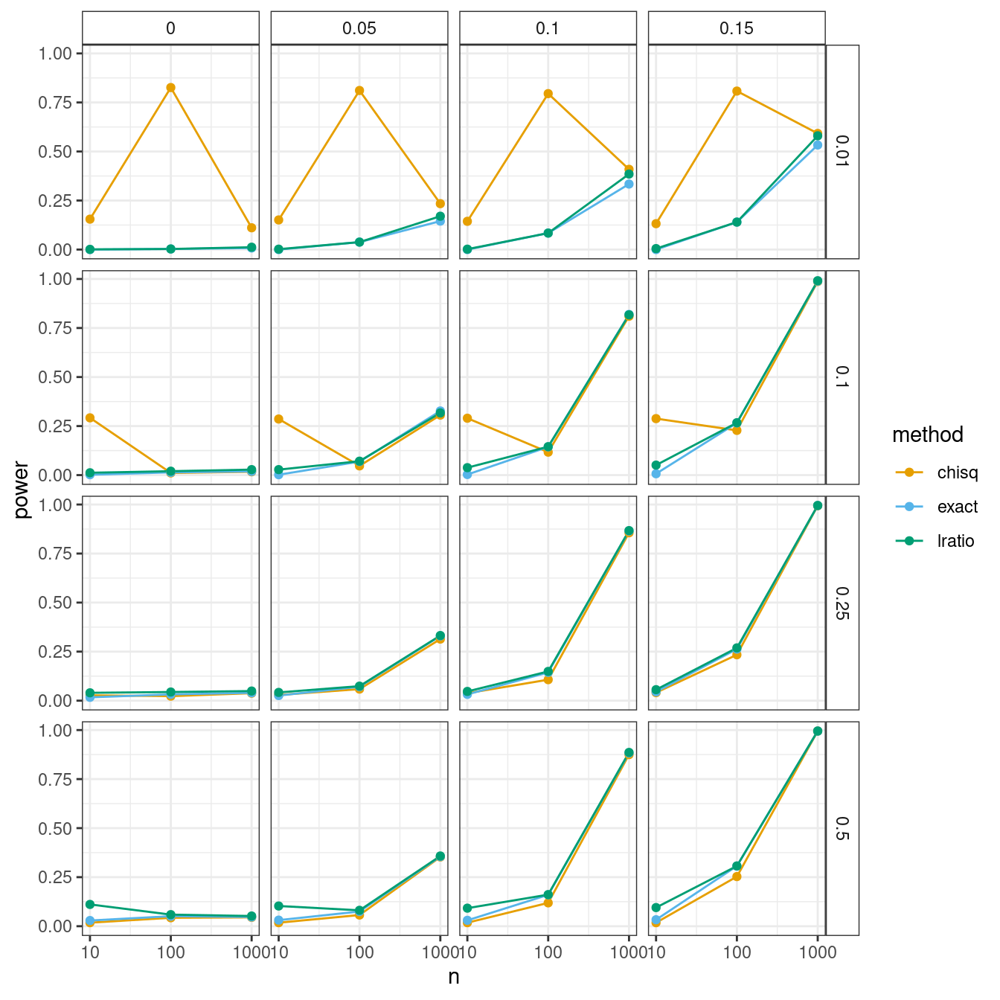

R Futures and Parallel Processing
David Gerard
2022-02-25
Learning Objectives
- Futures, batch jobs, parallel processing.
- Comprehensive Overview of Futures
{doFuture}Vignette{foreach}Vignette{furrr}Website
Motivation
Parallel computing is where you run many processes at the same time.
E.g., suppose I run this code to calculate the mean of a sample of 10 uniformly distributed observations, and repeat this 1000 times.
nsamp <- 1000 nind <- 10 outvec <- rep(NA_real_, length.out = nsamp) for (i in seq_len(nsamp)) { outvec[[i]] <- mean(runif(nind)) }Each iteration does not depend on any other iteration, so we could potentially run each iteration independently and simultaneously.
This could potentially speed things up:

Parallel processing can be beneficial if all of the following are true:
- You have independent iterations (though this can be relaxed in sophisticated and clever ways).
- Each iteration takes awhile (not a millionth of a second).
- You aren’t passing huge datasets around each iteration.
Sometimes, if you have a quick for-loop, the overhead of parallelization actually can slow things down. This is why parts 2 and 3 are important.
E.g., we would never parallelize the for-loop example above.
We will talk about a relatively new approach to parallel processing in R through the use of “futures”.
Future Overview
A future is a value that may be available at some point in the future. This value is the result of an expression (either evaluated or unevaluated).
The
{future}package implements a nice future data structure built on top of environments.library(future)When you create a future, you create something that may eventually have a value.
When you use a future, you evaluate the expression, obtain that value, and use that value.
Futures can be evaluated sequentially or in parallel, on the same machine or on a distributed cluster of machines.
The idea of a future is that you can write the same R code for sequential single computer jobs, as well as for large parallel jobs on the supercomputer, and the R code will work in both scenarios. This is pretty awesome.
This is also great because different types of parallel processing sometimes require different types of code. Using a future means that you don’t need to worry about the parallel processing environment.
Example: Below, we do normal evaluation, binding
xto 10. This is evaluated right away, and so"Hello World"is printed.x <- { cat("Hello World\n") 10 }## Hello Worldx + 1## [1] 11Below, we create a future that is not evaluated right away, so
"Hello World"is not printed. It just can be evaluated at some point.x %<-% { cat("Hello World\n") 10 }When we use
x, then the future is evaluated, the expression runs, and “Hello World” is printed.x + 1## Hello World## [1] 11Alternatively, we can explicitly create a future with
future::future()f <- future({ cat("Hello World\n") 10 })and evaluate it with
future::value().value(f) + 1## Hello World## [1] 11You can create futures using
%<-%orfuture::future(), like I did above. But it is more common to use a the{future}package as a backend to a more familiar API.{furrr}: Uses the{purrr}API.{foreach}: Uses a for-loop API.{future.apply}: Uses base R vectorization API (likeapply(),sapply(),vapply(), etc)
Evaluation Plans
You use
future::plan()to determine if a future will be evaluated sequentially or in parallel using a particular strategy.You basically just run
future::plan()once, and the{future}package will automatically run processes according to your plan.I am going to demonstrate plans by using the
Sys.getpid()function, which returns the process ID of the R session. So different ID’s means that the evaluation occurs on different processes.Using this, the following with run
Sys.getpid()three times:purrr::map_int(c(1, 1, 1), ~Sys.getpid())## [1] 73247 73247 73247We will use
furrr::future_map_int()instead to run these as futures.plan("sequential")is the default and basically just runs R like you normally would. So all evaluation occurs in the same R process/session.plan("sequential") furrr::future_map_int(c(1,1,1), ~Sys.getpid())## [1] 73247 73247 73247If your computer has multiprocessing or multithreading capabilities, then you can run your code in parallel.
See how many cores you have available by
future::availableCores()## system ## 8Whatever number you get is the maximum that you should try. However, if you are on a super computer, then you typically want to use much fewer than that number, otherwise you will be using up too much resources and the admins will frown on that (always be nice to your admins). Always read the documentation your admins give you to determine your resource allowances.
plan("multisession", workers = n): Createsnnew R sessions, and evaluates futures on these new R sessions. This allows for parallel computing.plan("multisession", workers = 3) furrr::future_map_int(c(1,1,1), ~Sys.getpid())## [1] 73319 73320 73321plan("multicore", workers = n): Createsncopies of your current R process (called “forking”), and evaluates futures on these new R processes. This allows for parallel computing.- Not available on Windows machines.
- Strongly discouraged while running RStudio.
plan("multicore", workers = 3) furrr::future_map_int(c(1,1,1), ~Sys.getpid())## [1] 73451 73452 73453My understanding is that forking (using “multicore”) means that the processes share the same memory addresses for objects (these objects are read-only in the child processes). While creating new R sessions means that everything needs to be copied over to a new R session. So forking can be faster. But I guess forking can also be dangerous because it can cause the process to “lock” (stall) in some rare cases (for technical reasons). But my understanding is tenuous, so if you know better, let me know.
So you should typically use
plan("multisession", workers = n)if you are doing parallelization on one computer.
{furrr}
We used
{furrr}for the examples above. If you know{purrr}then switching to parallel computing should be pretty easy.Here are the steps:
- Implement the code you want to parallelize using functional programming as you would with
{purrr}. But use the{furrr}drop-in replacements. - Use the appropriate
plan()call. - Run the code.
- Implement the code you want to parallelize using functional programming as you would with
Implemented functions:
future_map()future_map2()future_pmap()future_walk()future_imap()future_modify()
You usually create a function that you want to call repeatedly
f <- function(x) { Sys.sleep(1) return(x) }Then you call
{furrr}functions on it.Let’s compare sequential and parallel processing times:
plan("sequential") system.time( x <- furrr::future_map_dbl(1:3, f) )## user system elapsed ## 0.012 0.000 3.015plan("multisession", workers = 3) system.time( x <- furrr::future_map_dbl(1:3, f) )## user system elapsed ## 0.086 0.001 1.630
{foreach}
{foreach}is a package that gives another API for doing a for-loop.library(foreach)The biggest difference is that in a
{foreach}for-loop, you save the output to a final destination. In a regular for-loop, each iteration produces side effects.The syntax for a
{foreach}for-loop is:x <- foreach(i = 1:n) %do% { ## code that returns some element each iteration. ## These will be combined in some way and assigned to x }The
{foreach}for-loop by default combines the outputs in a list.x <- foreach(i = 1:3) %do% { sqrt(i) } x## [[1]] ## [1] 1 ## ## [[2]] ## [1] 1.414 ## ## [[3]] ## [1] 1.732You can change how the outputs are combined by the
.combineargument. Typically, you combine either usingc,rbind, orcbind.Using
creturns a vectorx <- foreach(i = 1:3, .combine = c) %do% { sqrt(i) } x## [1] 1.000 1.414 1.732Using
rbindwill make each returned vector a row.x <- foreach(i = 1:3, .combine = rbind) %do% { c(sqrt = sqrt(i), square = i^2) } x## sqrt square ## result.1 1.000 1 ## result.2 1.414 4 ## result.3 1.732 9To do parallel processing with
foreach():- Attach the
{doFuture}package. - Run
doFuture::registerDoFuture().- This makes it so that
{foreach}knows to use the parallelization backend from{future}. - It’s possible to use other backends. E.g., if you run
doParallel::registerDoParallel()then{foreach}will use the{parallel}backend.
- This makes it so that
- Run
future::plan() - Replace
%do%with%dopar%.
library(doFuture) registerDoFuture() plan("multisession", workers = 3) x <- foreach(i = 1:3, .combine = c) %dopar% { Sys.getpid() } x## [1] 73590 73589 73591- Attach the
If you are simulating anything inside a
{foreach}for-loop (or using the random number generator in any way), then you need to use the{doRNG}package.- Attach the
{doRNG}package. - Run
doFuture::registerDoFuture() - Run
doRNG::registerDoRNG() - Run
future::plan() - Replace
%do%with%dopar%.
- Attach the
Doing this makes reproducibility possible.
library(doRNG) registerDoFuture() registerDoRNG() plan("multisession", workers = 3) set.seed(2) x <- foreach(i = 1:3, .combine = c) %dopar% { runif(1) } set.seed(2) y <- foreach(i = 1:3, .combine = c) %dopar% { runif(1) } x == y## [1] TRUE TRUE TRUEIf you don’t do this, then reproducibility is impossible, even if you set the seed to the same value each time:
doFuture::registerDoFuture() plan("multisession", workers = 3) set.seed(2) x <- foreach(i = 1:3, .combine = c) %dopar% { runif(1) } set.seed(2) y <- foreach(i = 1:3, .combine = c) %dopar% { runif(1) } x## [1] 0.5632 0.2796 0.3843y## [1] 0.8335 0.1817 0.2702
Simulation Study Example
The
{HardyWeinberg}package contains four tests for Hardy-Weinberg Equilibrium, a \(\chi^2\)-test, a likelihood ratio test, an exact test, and a permutation test.The following will simulate genotype frequencies under different sample sizes
n, allele frequenciesaf(between 0 and 1), and fixation indicesfx(between 0 and 1, but typically less than 0.15). HWE is fulfilled whenfx = 0.#' @param n Sample size #' @param af Allele frequency #' @param fx Fixation index. Null hypothesis of HWE is true if fx = 0. hwesim <- function(n, af, fx) { probvec <- c( af ^ 2 + af * (1 - af) * fx, 2 * af * (1 - af) * (1 - fx), (1 - af) ^ 2 + af * (1 - af) * fx ) retvec <- c(rmultinom(n = 1, size = n, prob = probvec)) names(retvec) <- c("AA", "AB", "BB") return(retvec) }We can then run the HWE tests from the package:
x <- hwesim(n = 100, af = 0.5, fx = 0.1) HardyWeinberg::HWChisq(X = x)## Chi-square test with continuity correction for Hardy-Weinberg equilibrium (autosomal) ## Chi2 = 0.35 DF = 1 p-value = 0.5541 D = -1.84 f = 0.07407HardyWeinberg::HWLratio(X = x)## Likelihood ratio test for Hardy-Weinberg equilibrium ## G2 = 0.5489 DF = 1 p-value = 0.4588HardyWeinberg::HWExact(X = x)## Haldane Exact test for Hardy-Weinberg equilibrium (autosomal) ## using SELOME p-value ## sample counts: nAA = 23 nAB = 46 nBB = 31 ## H0: HWE (D==0), H1: D <> 0 ## D = -1.84 p-value = 0.5452If we want to explore the performance between these three methods (I’ll discuss the permutation approach soon), we would probably vary
n\(\in \{10, 100, 1000, 10000\}\)af\(\in \{0.01, 0.1, 0.25, 0.5\}\)fx\(\in \{0, 0.05, 0.1, 0.15\}\)
This is \(3 * 4^2 = 48\) unique combinations, and in each combination we would probably want to run 1000 replications. So that’s 48000 replications.
Let’s first create a data frame containing the possible parameter values:
nrep <- 1000 nvec <- c(10, 100, 1000) afvec <- c(0.01, 0.1, 0.25, 0.5) fxvec <- c(0, 0.05, 0.1, 0.15) paramdf <- expand.grid(seed = 1:nrep, n = nvec, af = afvec, fx = fxvec) dim(paramdf)## [1] 48000 4head(paramdf)## seed n af fx ## 1 1 10 0.01 0 ## 2 2 10 0.01 0 ## 3 3 10 0.01 0 ## 4 4 10 0.01 0 ## 5 5 10 0.01 0 ## 6 6 10 0.01 0If we were doing a for-loop, we would probably first populate the data frame with all of the output we want. Here, let’s say we want the \(p\)-values for each test:
paramdf$p_chisq <- NA_real_ paramdf$p_lratio <- NA_real_ paramdf$p_exact <- NA_real_We would then iterate through this data frame, populating the output
pb <- progress::progress_bar$new(total = nrow(paramdf)) for (i in seq_len(nrow(paramdf))) { pb$tick() set.seed(paramdf$seed[[i]]) n <- paramdf$n[[i]] af <- paramdf$af[[i]] fx <- paramdf$fx[[i]] x <- hwesim(n = n, af = af, fx = fx) paramdf$p_chisq[[i]] <- HardyWeinberg::HWChisq(X = x, verbose = FALSE)$pval paramdf$p_lratio[[i]] <- HardyWeinberg::HWLratio(X = x, verbose = FALSE)$pval paramdf$p_exact[[i]] <- HardyWeinberg::HWExact(X = x, verbose = FALSE)$pval }When I ran this on my laptop, it took about a minute, which isn’t that bad, so I wouldn’t bother parallelizing here.
But if I also wanted to compare
HardyWeinberg::HWPerm(), this one function alone takes about 5 seconds by itselfx <- hwesim(n = 1000, af = 0.5, fx = 0.15) system.time( HardyWeinberg::HWPerm(x = x, verbose = FALSE) )## user system elapsed ## 5.523 0.001 5.523So if I had to include that in the simulation study, it could take up to \(5 \times 48000 / 60 / 60 = 66.7\) hours, and I would totally parallelize in this scenario.
The code for parallelization looks like this:
paramdf <- expand.grid(seed = 1:nrep, n = nvec, af = afvec, fx = fxvec) registerDoFuture() registerDoRNG() plan("multisession", workers = availableCores()) pmat <- foreach(i = seq_len(nrow(paramdf)), .combine = rbind) %dopar% { set.seed(paramdf$seed[[i]]) n <- paramdf$n[[i]] af <- paramdf$af[[i]] fx <- paramdf$fx[[i]] x <- hwesim(n = n, af = af, fx = fx) pvec <- rep(NA_real_, length.out = 3) names(pvec) <- c("p_chisq", "p_lratio", "p_exact") pvec[[1]] <- HardyWeinberg::HWChisq(X = x, verbose = FALSE)$pval pvec[[2]] <- HardyWeinberg::HWLratio(X = x, verbose = FALSE)$pval pvec[[3]] <- HardyWeinberg::HWExact(X = x, verbose = FALSE)$pval pvec } paramdf <- cbind(paramdf, pmat)Using 8 cores on my laptop, the above took about 20 seconds, which is about 3 times faster than sequential processing.
There are some small optimizations I could do to improve performance even more. E.g. in the above I am passing around that large data frame
paramdfto each new R session.- If you are curious on how to solve this, read about using the
{iterators}in the{foreach}vignette.
- If you are curious on how to solve this, read about using the
Side note: The simulation results indicate that the chi-square is not appropriate for small counts for small allele frequencies. The likelihood ratio and exact tests perform similarly.
library(tidyverse) paramdf %>% gather(p_chisq, p_lratio, p_exact, key = "method", value = "pvalue") %>% group_by(n, af, fx, method) %>% summarize(power = mean(pvalue < 0.05), .groups = "drop") %>% mutate(method = str_remove(method, "p_")) %>% mutate(af = factor(af), fx = factor(fx)) %>% ggplot(aes(x = n, y = power, color = method)) + facet_grid(af ~ fx) + geom_line() + geom_point() + scale_x_log10() + scale_color_manual(values = c("#E69F00", "#56B4E9", "#009E73"))
Bash notes:
You can see if your R processes are running by using
topin Bash (not for Windows).topIt will open a running list of processes, and if your parallelization is successful you should see multiple processes called
R.You can exit the
toplist by typingq.If you want to be fancy, you can try downloading
htop.
New Functions
future::availableCores(): See how many cores are available.future::plan(): Set the evaluation plan ("sequential"/"multisession"/"multicore").furrr::map()and variants.doFuture::registerDoFuture(): Register a parallel backend so that{foreach}knows how to use%dopar%.doRNG::registerDoRNG(): Register a parallel backend that is reproducible when using%dopar%.foreach()used with%do%or%dopar%.

This work is licensed under a Creative Commons Attribution-NonCommercial 4.0 International License.